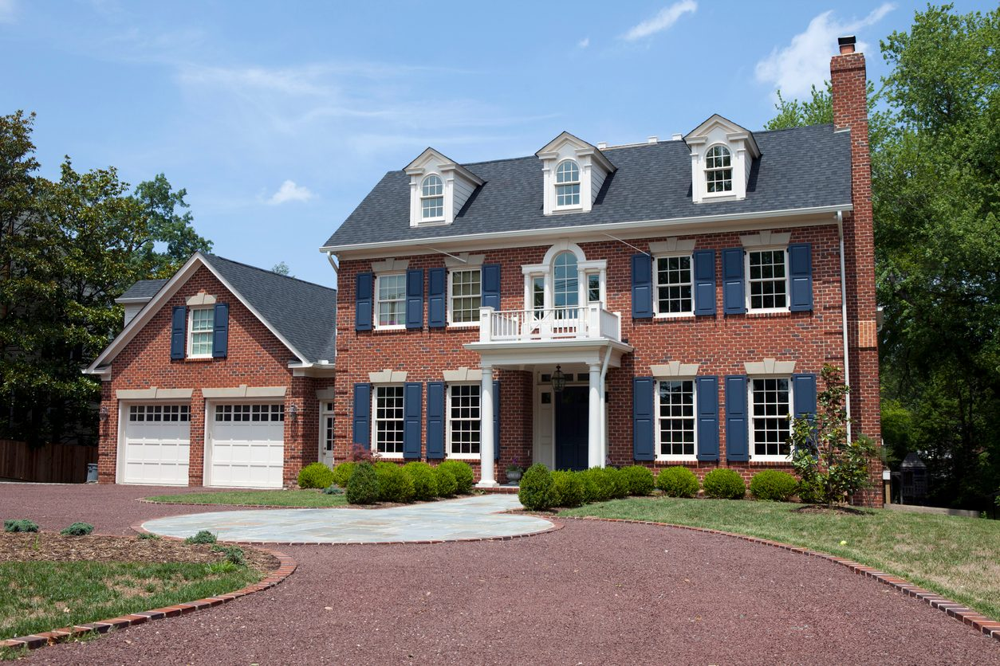

From 2D Photos to 3D Models
Attach a picture of a real house and the AI assistant reads it like a precedent, builds it, and measures its own work against it
You pass a house on your street and something about it stops you — the way its porch runs the whole front, the little gable pushed out over the door, the black windows against white boards. You take a photograph. Until recently the only thing you could do with that photograph was admire it: turning it into a building you can measure meant learning a CAD program and drawing the whole thing yourself, wall by wall. In Aladdin, you attach it to the chat panel and ask for the house. The assistant reads the picture the way an architect reads a precedent, builds a real 3D model of it in your scene, and then — this is the part that matters — checks its own work against the photograph and tells you what it could not match.


Attaching is as ordinary as it sounds. Drag the image onto the chat panel, paste it from the clipboard, or pick it with the attach button — up to three pictures in one message. A picture with no words at all is treated as a build order, so you can simply drop the photo and press send. Nothing is uploaded to a public server; the image is re-encoded to a small JPEG, travels inside your conversation, and is saved with your design, so the reference stays beside the model it produced. (One caveat: not every AI model can see. If you have chosen a text-only model, Aladdin tells you so before you send, and the assistant will say it cannot see the picture rather than inventing a house from a guess.)
This article walks through what the assistant actually takes off a photograph: how it fixes the orientation so the house is not built mirror-image, how it reads roof shapes from the triangles, what it counts rather than guesses, how it decides whether the columns are a porch, a portico, or a porch carved into the wall, how it reads the paint, and how it measures the finished model against the picture. It ends with the honest part — what a photograph cannot give you — and with what all of this is really for.
Left in the picture is west
Start with the single most consequential reading, because getting it wrong ruins everything else. Every house Aladdin builds faces south — that is what puts the sun where you expect it in the simulations that follow. A photograph of a front elevation was therefore taken looking north, and in that view the left of the picture is the west side of the house and the right is the east. A garage on the left of the photo goes on the west wall; a chimney on the right climbs the east gable; a wing stretching off the left end reaches west.
Get it backwards and the whole elevation mirrors. This is not a hypothetical failure — it is the one we saw most often before we wrote the rule down explicitly, and it is peculiarly hard to notice: every individual part is right, the proportions are right, and the house still reads as a different house. You do not have to work out the real compass orientation of the building in the photograph, and you should not try; the model is turned to face south whatever the original does, so the mapping is fixed and simple.
The roof is written in triangles
Ask which way a ridge runs and most people squint. A photograph states it plainly, and the assistant is taught to read it the way a builder does. A gable end is a triangle of wall under the roof, and it always points along the ridge. So for each mass in the picture — the main block, a wing, the garage, a dormer — the question is simply: do I see a triangle on the face turned toward me, or a horizontal eave line? A triangle means that ridge runs into the picture, toward or away from the camera. An eave line means it runs across.
Then a second question, which decides whether the roof has a ridge at all: follow the eave to the corner. If it stops there and a slab of wall climbs above it, the end is gabled. If the eave turns the corner and keeps running level along the end wall, the end is hipped — no wall above the eave anywhere, the roof closing in from four sides. A hip and a gable of the same pitch are two different houses from the street, and the eave line is free to read. On an attached garage, the same test settles the shape in one word: a triangle above the car doors means the ridge runs in through them; a plain eave means it runs the other way.

Count storeys per mass, not per house
A house in a photograph is usually more than one mass, and the thing that makes a wing read as a wing rather than as a second house is that it is shorter. So the storey count is taken for each mass separately, and it is measured against the main block's facade: a wing whose eave lands at the main eave is the same height; at the upstairs window sills, about one and a half storeys; level with the porch roof or the tops of the ground-floor windows, one storey — which is the common answer for a side wing.
There is a related trap the assistant is taught to avoid: windows in the roof are not a storey. A row of dormers poking through a slope, or lights in a gable triangle, light the attic. A house with one row of windows in the wall and a row of dormers above it is a one-and-a-half-storey house — a Cape Cod, a dormered cottage — and building it as two full storeys plus dormers gives you three levels where the photograph has one and a half.
What gets counted rather than guessed
A photograph carries no dimensions, but it carries a great many ratios, and ratios are enough. A window's width is read as a fraction of the width of the mass it sits in, and that fraction is then applied to the mass being built — a sash a twelfth of the block wide comes out at 1.25 m on a 15 m house, not at the 1.0 m default that makes every large house read as a squat one. Its height is read the same way against one storey.
Some things are counted outright. The number of window bays across the front. The glazing bars — and these are worth counting, because the grid is most of what says Georgian rather than builder-modern. A six-over-six double-hung is three panes across and four up over the whole opening; a two-over-two is two and two. Glass with no bars at all is stated as no bars, rather than as a one-by-one grid. Left unsaid, every window in the scene takes the same default lattice whatever the reference showed, which is how a house can come back with the right brick, the right shutters and unmistakably wrong windows.
A porch, a portico, or a porch carved into the wall
Columns are the easiest thing to put on a house that has none, and a house wearing a porch it does not have is unrecognizable however right the rest of it is. So the assistant settles a prior question before it settles which sides the porch runs along: what do the columns cover? A porch roofs the windows — its eave runs past the door across whole bays, there is a deck under it, and the ground-floor sashes stand in its shadow behind the columns. Columns only beside the door, with the ground-floor windows out in open facade light either side of them, is a portico. And the flat-topped portico with a balustrade over it — the entry that half of all Colonial and Georgian photographs show — is one thing, not two: a portico with a railing, whose roof becomes the balcony floor.
There is a third shape, and it is the one that used to come back wrong most often. Look at what is above the columns. A built-on porch has a roof of its own, pitched or shed, with its own eave line dying against the house. A carved porch has none: the house's own wall and its main roof run straight on above and past the columns, the columns stand in the plane of the facade, and the front door sits in shadow behind that plane. That is the inset porch — the Spanish and Mission portal, the loggia's ground-floor original — and Aladdin now cuts it into the facade properly, with the storey above carrying it, arched bays on masonry piers when the photograph shows arches, and an open corner where the opening reaches one. Built as an ordinary projecting porch instead, it comes back as a lean-to stuck on a flat front.
The same reading applies one floor up: a deck let into the facade under the main roof, rather than hung off it, is a loggia, and it is built as one.
Colour is the first thing anyone sees
A correct house in the wrong colours reads as the wrong house, and it is the failure a viewer notices before anything else you got right. Aladdin's style recipes each carry a palette, because a house asked for in words with no colours named comes back grey — but when a photograph is in front of the assistant, the picture is the authority, and it outranks the recipe even where the recipe forbids a colour. A grey-and-white Queen Anne is a completely ordinary house; painting it plum because the style is Victorian builds a different building from the one you showed it. Four colours are read off the image and carried into the model: the wall body, the trim, the roof, and the door.
Glass gets the same treatment. Every window has a tint whether anyone sets it or not, and the default is a bright cyan that almost no photograph shows. Read off the picture, the panes come back dark grey on a sunlit facade, warm amber where a room is lit behind them, pale grey-green on a modern curtain wall — a small thing that does a surprising amount of the work of making a render look like a building.
Then the trim that carries the style, which is where a correct massing still comes back looking bare. A flat board under a projecting shelf over each window is a crosshead; a little triangle over the opening is a pedimented head. A flat casing ringing the whole opening is a window surround. At each end of a gable, an eave that turns the corner and runs a short capped stub onto the gable face before the rake climbs is a cornice return — the shelf under every Colonial, Federal and Greek Revival rake, and one of the plainest tells that a white gable front is a colonial and not a box. A gable standing in the plane of the facade, its rakes springing from the main eave line, is a wall gable rather than a dormer. And the thin stone-clad gable end standing on the ground and tucked inside a bigger front gable — the modern-farmhouse signature — is a shape of its own, not a wing.
Then it checks itself against the picture
Here is the part we think is genuinely unusual. After building from a photograph, the assistant does not simply hand you the result. It renders the model from the side the photograph was taken from and looks at it beside the reference — and because looking is the same faculty that read the picture in the first place, and when that is wrong it is wrong twice, it also measures.
The measurement is scale-free, which is the whole trick: nothing crosses in metres, because a photograph has no metres. The assistant states what it read off the image as ratios, and Aladdin measures the same ratios on the building it actually made and hands back the difference. So "the wing looks about right" becomes "0.93 of the main eave, against the 0.55 you read." The readings look like this:
main mass 2 storeys, hip, front gable: no
wing east, 0.47 of the main width, eave 0.55 of the main eave
front bays 5 window width 0.09 of the main mass
roof height 0.38 of the eave panes 3 wide x 4 tall
porch south only tower none
colours wall #b8b8b5 trim #ffffff roof #4b3a32 door #2e4a33Each finding comes back naming the thing that differs and the field that would change it: a wing built two storeys where the picture shows one, a roof built as a gable where the eave plainly turned the corner, a porch wrapping two sides where the photograph shows one, windows still sitting at the default size, glass still the default cyan. Two of those checks need no reference at all — they simply notice that nothing was ever said about the windows, which is the commonest way a photo build quietly stays generic.

What a photograph cannot give you
We would rather say this plainly than let you discover it. Aladdin builds out of a finite kit of parametric parts, and some of what a good photograph shows has nowhere to land. There are no truly curved walls — a bowed facade is faceted, and a "round" tower is a sixteen-sided one, which is honest enough at a distance and visible up close. There are no quoins, no engaged pilasters, no string courses, no rusticated base. Fish-scale shingles and sawn corner brackets are not modelled, though sawn bargeboards and porch friezes very much are. One window layout serves a whole wall, so the deep ground-floor sash of a Georgian front, running nearly to the floor with shorter windows above it, cannot be laid out; you choose the one height the wall carries.
It is worth being just as clear about how likeness itself behaves, because it does not improve evenly. The inventory and the colours — how many masses, what roofs, what paint — come across reliably. The composition — which mass on which side, where the gable and the porch and the tower actually stand — comes across with a round or two of correction. Proportional drama, the slim tall tower and the roof that is half the height of the house, comes across partly. Ornament density is the ceiling. A recognizable cousin of the house in your photograph: yes, and often a strikingly good one. That house, exactly: no. Knowing which of those you are getting is more useful than a promise.
And the assistant is asked to tell you the same thing in its own words — to say in a line what it read off the image and what it approximated or left out, rather than letting you find it missing. Never inventing what the photograph does not show is part of the same discipline: the back of the house, the room count, the dimensions. If you know them, say so in words, and your words win over its estimate.
From a likeness to an engineering model
None of this would be worth much if the result were a picture. It is not. What comes out of a photograph is the same kind of object as everything else in Aladdin: a building with walls of a real thickness, windows with real areas, a roof with a real pitch, standing at a real place on the Earth. So the interesting questions start where the modelling stops.
Put the house at your own latitude and ask what it costs to heat and cool across a year, using real weather data for that location. Ask which rooms overheat on an August afternoon. Cover the south slope with solar panels and ask what they would generate — and whether the neighbour's roof, or the tree in the front yard, takes a bite out of it in December. Paint the yearly solar radiation onto the roof planes as a heatmap and see at a glance which face is worth the investment. That is the reason the orientation rule matters, and the reason a hip built as a gable is worth catching: those are not cosmetic errors, they change the numbers.
It is also, we think, a rather good way to learn to look at buildings. Once you have had to decide whether that eave turns the corner, you never quite stop noticing.
Conclusion
A photograph is the most common way anyone records a building they like, and it has always been the least useful thing to hand a design tool. Attaching one to Aladdin's assistant turns it into something you can rotate, edit, insulate, orient, and simulate — not by tracing it, but by reading it: the triangles that say which way the ridges run, the eave that turns a corner, the storeys counted per mass, the panes counted per sash, the columns that cover windows rather than a door, the four colours a street actually sees. Then the model is measured against the picture and the differences are handed back to you, along with an honest account of what the kit could not reproduce.
Take a picture of the house on your street. See how close it gets, and where it falls short — then tell it what to fix, in a sentence, and watch it fix it.
← Back to Aladdin